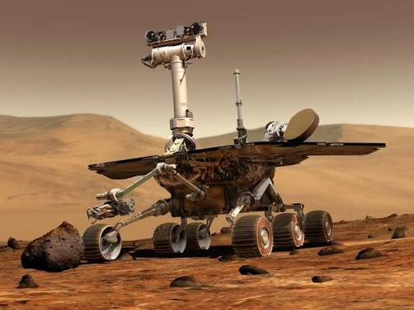
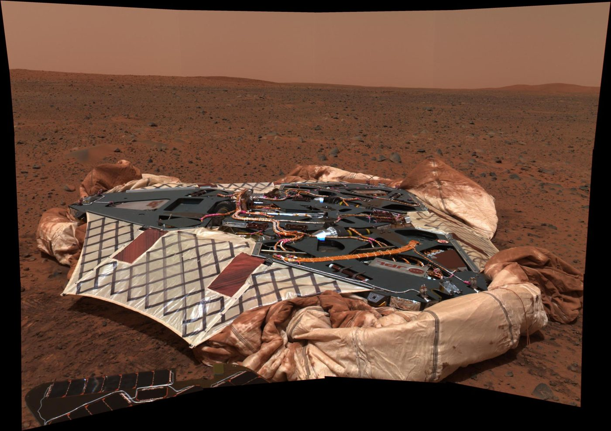
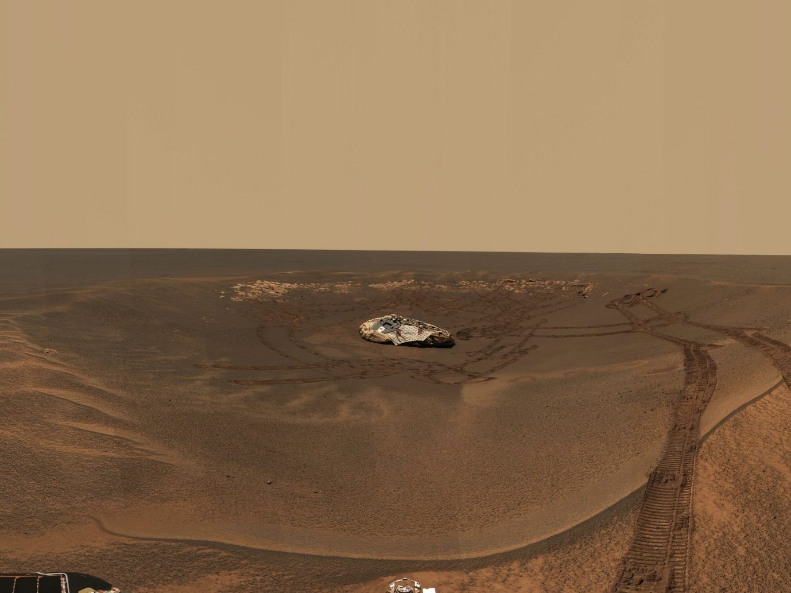
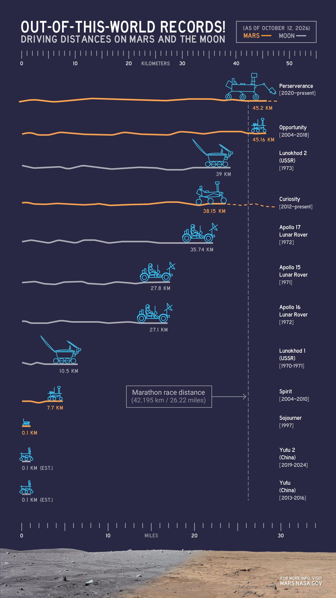

Home / Mars / Spirit and Opportunity
Spirit and Opportunity
Twin rovers built for 90 days. One lasted six years, the other fourteen.
Mars2004-2018Gusev Crater and Meridiani Planum

At a glance
| Mass | about 185 kg each |
|---|---|
| Length | about 1.6 m |
| Instruments | Pancam, Mini-TES, Mossbauer, APXS, Microscopic Imager, Rock Abrasion Tool |
| Spirit's drive | about 7.7 km |
| Opportunity's drive | about 45.2 km |
Overview
Opportunity landed in a crater that looked like a bullseye. Its first look at bedrock showed layered rocks with tiny round hematite spheres, evidence that water had soaked through the rock. Later it visited Endeavour Crater, where it found clay minerals that formed in less acidic water, a more life-friendly environment.
NASA’s Spirit and Opportunity rovers were identical twin robots that helped rewrite our understanding of the early history of Mars.
Where it began
The Mars Exploration Rovers were golf-cart sized robots built by JPL, each with a robotic arm, cameras, and a solar array. NASA aimed them at places that might have held liquid water.
Search for and characterize a variety of rocks and soils that hold clues to past water activity. In particular, samples sought included those that have minerals deposited by water-related processes such as precipitation, evaporation, sedimentary cementation, or hydrothermal activity.
Determine the distribution and composition of minerals, rocks, and soils surrounding the landing sites.
Determine what geologic processes have shaped the local terrain and influenced the chemistry. Such processes could include water or wind erosion, sedimentation, hydrothermal mechanisms, volcanism, and cratering.
Perform "ground truth" – calibration and validation – of surface observations made by Mars orbiter instruments. This helped determine the accuracy and effectiveness of various instruments that survey Martian geology from orbit.
Search for iron-containing minerals, identify and quantify relative amounts of specific mineral types that contain water or were formed in water, such as iron-bearing carbonates.
Characterize the mineralogy and textures of rocks and soils and determine the processes that created them.
Search for geological clues to the environmental conditions that existed when liquid water was present. Assess whether those environments were conducive to life.
The mission
Spirit landed on 4 January 2004 and Opportunity three weeks later. Both far outlived their 90-day plan.
The rovers were targeted to land at sites on opposite sides of Mars that looked as though they were affected by liquid water in the past. Spirit landed at Gusev Crater, a possible former lake in a giant impact crater. Opportunity landed at Meridiani Planum, a place where mineral deposits suggested that Mars had a wet history.

This image mosaic taken by the panoramic camera onboard the Mars Exploration Rover Spirit shows the rover's landing site, the Columbia Memorial Station, at Gusev Crater, Mars. This spectacular view may encapsulate Spirit's entire journey, from lander to its possible final destination toward the east hills. On its way, the rover will travel 250 meters (820 feet) northeast to a large crater approximately 200 meters (660 feet) across, the ridge of which can be seen to the left of this image. To the right are the east hills, about 3 kilometers (2 miles) away from the lander. The picture was taken on the 16th martian day, or sol, of the mission (Jan. 18/19, 2004). A portion of Spirit's solar panels appear in the foreground. Data from the panoramic camera's green, blue and infrared filters were combined to create this approximate true color image.

This image shows the middle section of an approximate true-color panorama, dubbed "Lion King," showing "Eagle Crater" and the surrounding plains of Meridiani Planum. It was obtained by the Mars Exploration Rover Opportunity's panoramic camera on sols 58 and 60 using infrared (750-nanometer), green (530-nanometer) and blue (430-nanometer) filters. The full panorama comprises 558 images and more than 75 megabytes of data, the largest panorama captured by either of the Mars Exploration Rovers in 2004. It depicts a story of exploration including the Opportunity rover's lander, a thorough examination of the outcrop behind, a study of the soils at the near-side of the lander, a successful exit from Eagle Crater, and finally the rover's next desination, the large crater dubbed "Endurance." Original image and full panorama: https://photojournal.jpl.nasa.gov/catalog/PIA05755
How it worked
A rock-grinding tool exposed fresh surfaces for spectrometers. Wind sometimes cleaned the solar panels, letting both rovers keep going far longer than planned.
Each robotic explorer sent to the Red Planet has its own unique capabilities driven by science. Many attributes of a rover take on human-like features, such as “heads,” “bodies,” and “arms and legs.”
| Body | A strong structure that protects the rovers' "vital organs" like computers, electronics and electronics, some of which keep the vital organs protected and temperature-controlled. |
|---|---|
| Brains | Computers to process information. |
| Temperature controls | Internal heaters, a layer of insulation, and more to protect the rover from extreme temperatures. |
| "Neck and Head" | A mast for the cameras to give the rovers a human-scale view. |
| Eyes and other "senses" | Cameras and instruments that give the rovers information about their environment to aid in navigation and science investigations. |
| Arm | Much like a human arm, the robotic arm has flexibility through three joints: the rover's shoulder, elbow, and wrist to maneuver the instruments that help scientists get up-close and personal with Martian rocks and soil. |
| Wheels and "Legs" | Parts for mobility. |
| Energy | Batteries and solar panels. |
| Communications | Antennas for "speaking" and "listening." |
What it found
They found mineral spheres nicknamed blueberries, salty water signatures, and ancient silica deposits, all pointing to a wetter, warmer Mars once able to support microbes.
Why it was left behind
Spirit got stuck in soft sand in 2009 and could not tilt toward the Sun in winter, falling silent in March 2010. Opportunity's solar panels were blocked by a global dust storm in June 2018. NASA ended the mission in February 2019.
Where it is now
Both rovers sit where they stopped. Opportunity rests in Perseverance Valley on the rim of Endeavour Crater.
By the end of its mission, Spirit journeyed 4.8 miles (7.7 kilometers) on Mars. Opportunity held the off-Earth roving distance record after accruing 28.06 miles (45.16 kilometers) of driving on Mars, when it fell silent in June 2018. That record held until Oct. 11, 2026, when its successor, NASA's Mars rover Perseverance, rolled past Opportunity's mark to reach 28.10 miles (45.22 kilometers)... and counting.

Spirit's greatest find came from a broken wheel. Dragging it, the rover scraped away the soil and exposed bright, silica-rich material like that around hot springs on Earth. Even after it was trapped, Spirit kept working as a stationary lab. Opportunity ended its career in a dust storm so thick that the sunlight needed to charge its batteries disappeared.
Timeline of events
- Jun-Jul 2003 Spirit and Opportunity launch
- 4 and 25 Jan 2004 Spirit and Opportunity land
- 2009 Spirit becomes stuck in sand at Troy
- Mar 2015 Opportunity completes a marathon distance
- 10 Jun 2018 Last signal from Opportunity during the dust storm
2018
Opportunity lost to a global dust storm; Spirit ended 2010.
Read more on NASAText and images adapted from NASA mission pages.